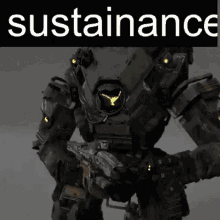
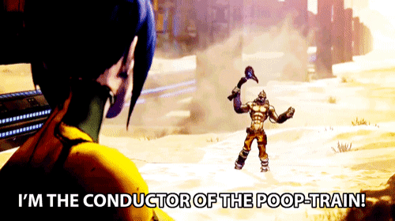
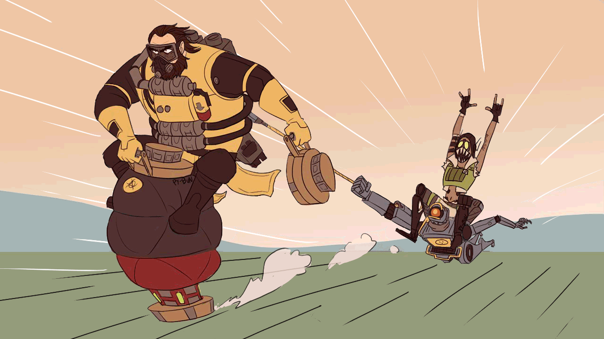
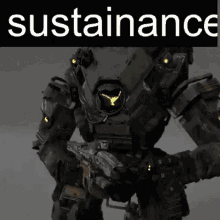
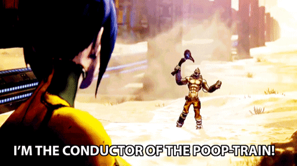
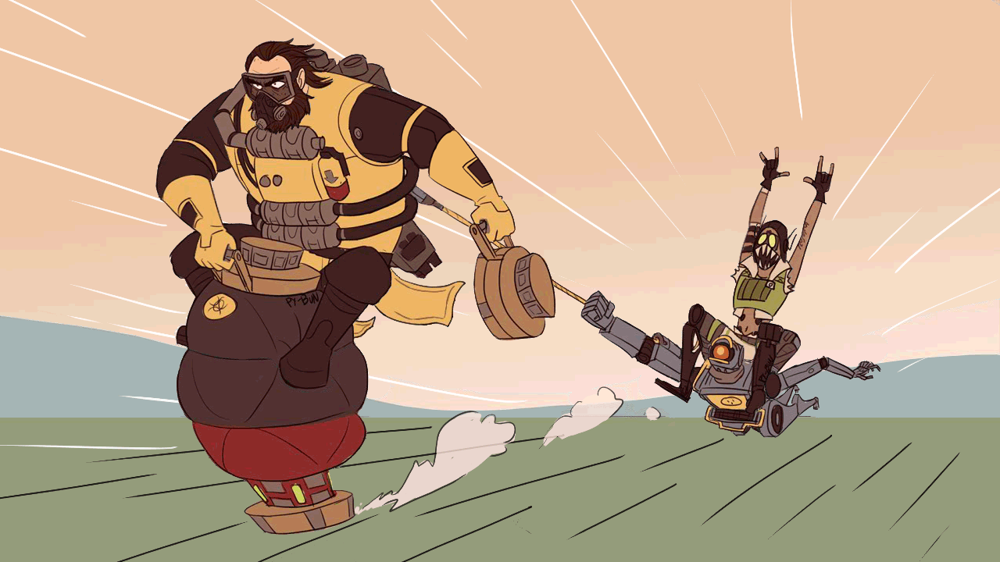

About Myself:
Hi! My name is Aron and if you are reading this you are likely in my class as well. My main hobbies include gaming of any sorts whether that be card games, board games, or video games.
My favorite video games include games such as Skyrim, Borderlands 2, Titanfall 2, and Apex Legends. I like the first person shooter aspect of games as it is intese and fast paced, but I also like the storylines that both Skyrim and Borderlands provide as I am a conniseur for all things lore.
My favorite card game as of late would have to be Magic the Gathering. I like the uniqueness of deck building and the many, many different ways you can break the game.
I am also a big advocate for Dungeons and Dragons, and my favorite class to run is Druid as I like the freedom of decimating opponents as my spirit animal.
In addition to gaming I am also an Eagle scout. I like to help out in the community whenever I can as it gives me great joy to help others. I hate to see my peers stuck in a rut, so I do whatever I can whether it is motivation or guidence to help them push past their hardships.
I also like Memes! Here are a couple of memes that I like Below:
   
  